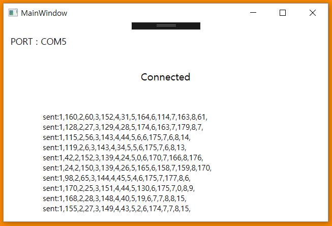

Mechanical
Manny’s Arms
Manny’s arm movement is controlled by servo-driven pulleys that control joint movement. The joints themselves are placed in two areas we found critical for movement expression: the shoulders and the elbows. Each joint is driven by two wires: pulling one of the wires turns the joint at an upward angle, and the second wire brings the joint back down. These wires are looped around a pulley connected to a servo motor, then tied together. They are looped on opposite sides of the pulleys, so that movement of the servo always tugs at one of the wires. The capstans located on the joints follow a similar mechanism, where rotation of the joints occurs upon tugging a wire. This joint rotation, in turn, moves the arms up and down.Manny’s Legs
Manny’s leg movement is accomplished by a servo-driven mechanical linkage. Underneath the base is one servo mounted to rotate around the y-axis that was a 2.5” horn attached to it. At the end of the horn there is yet another servo mounted to rotate it in the x-axis with a horn fitted with a pivoting clear linkage. The linkage can rotate up to 90 degrees and is on inch long. By attaching this to the bottom of Manny’s leg the servo is able to give it 1” of vertical movement and 90 degrees of rotational movement. Since the linkages are clear, it gives Manny the illusion of being able to raise, lower, and rotate his legs in correspondence with the person he is watching.Manny’s Support
Manny is supported by two 5.5’ steel rods that are mounted to the top of the base. The mounting point consist of 6 pieces of laser cut acrylic stacked on top of eachother to get additional support. These stacks are then hard mounted to the top of the base using four bolts to ensure a sturdy connection between the base and the rods. The rods are then attached to two 3D printed holders that clamp around Manny’s torso. This is able to hold him stable in place, while still keep the design modular and easy to take apart if there is need for repairs. There are two #8 bolts that run between the two holders, and when tensioned, create a clamp-like hold around Manny.The Base
The base features an 11”-diameter laser-cut design with hole cut-outs for Manny’s leg sweeping motion, guides for the pulley wires, the bolts holding down Manny’s supports, and the column supports supporting the base top. The interior base is designed to house 8 servos used to drive Manny. Laser-cut holes in the lower base design dictate where mounts that contain the servos are to be placed. The mounts were designed to follow a radial pattern, in compliment of the circular base design. The ultimate choice of color was all-black, in order to boast a sleek and consistent base aesthetic.

Materials of Choice
The BaseWe elected to use ⅛”-thick black acrylic for the base. After using MDF material for three consecutive sprints, the team felt it was too much of a prototype material, and that it would be in our best interests to upgrade if we were to deliver on the high-quality, professional product we all were aiming for. The servo mounts inside the base also use the black acrylic.
The Joints
For Manny’s joints, we used a combination of 3D-printed pieces, aluminum dowels, and rubber tubing. Because the capstans and pulleys boast an irregular shape unique to Manny’s needs, we believed it more time-efficient to use 3D-printed designs instead of machined parts. The dowels were a readily available material that worked well for jointing purposes. The rubber tubing provided a function similar to the u-joints, and served well as a low-tech alternative. We used fishing line as wire despite our attempts to find a more suitable material. While fishing wire’s shape can be rather easily distorted, it handle up to 30 lbs. of resistance and moves smoothly through the joints. Additional information on this design decision can be found in the Limitations section.
Manny
The team used hollow aluminum rods to create Manny’s limbs. With regards to their appearance, they provide a simplified and cleaner-looking alternative to blocky 3D-printed limbs. Manny’s torso was 3D-printed to both maximize time efficiency and be consistent with the joints.
Manny’s Supports
Manny’s supports consisted of laser cut squares glued together for the connection to the top of the base. There was then two 5.5” steel rods that ran up to where manny was positioned, with two 3D printed holders on top of them.
Limitations
In assembling our final version of Manny, we encountered a few stumbling blocks that create limitations in the functionality of our system.Fishing Line
The braided string we purchased was unable to move freely through the joints, so we reverted back to the fishing line used in prior sprints. Unfortunately, a limitation of fishing line is its slightly stretchy properties. This has led to the wires becoming loose, and which need to be re-tied often to obtain full arm motion.
Pulleys
The pulleys do not have a built-in mechanism to adjust the tension the fishing wire as desired. Currently, the only method of achieving this is by manually untying the wires, tugging on them to increase the tension, then re-tying them.
Support Mold
Due to the imperfections of 3D printing, the mold printed to support Manny does not fit precisely. As a result, some forcing was necessary to fit it on him. The support mold is cracked, and Manny shifts occasionally. However, this has little to no effect on the functionality of the system.
Arduino Box
The pocket designed to hold the Arduinos is unavailable for use. The size of the Arduinos, in conjunction with the fishing wire blocking the entrance to the pocket, renders the pocket useless. However, this was an aesthetic add-on and does not affect the functionality of the system.
Software
Dependencies
- Kinect for Windows SDK v1.8
- Supported OS : Windows 7, Windows 8, Windows 8.1, Windows 10, Windows Embedded Standard 7
- .NET Framework 4 or Higher
- (For Development Purpose Only) Visual Studio 2010 - 2017 with C++ or C# dependencies installed.
Kinect Joint Orientation Detecting : with Kinect SDK
 Source :https://msdn.microsoft.com/en-us/library/hh973074.aspx
Source :https://msdn.microsoft.com/en-us/library/hh973074.aspx
Kinect SDK 1.8 for Windows provides a skeletal tracking module that allows Kinect to recognize people and follow their actions. It uses the IR camera to track and locate the joints of the tracked users. It supports both C++ and C# support. We used C# to write our kinect sensor interface because we were fairly new to both languages and C# had easier syntax and was used a lot in the Kinect community. The figure above illustrates the outline of the skeleton heriarchy that the system is capable of tracking.

 Source :https://msdn.microsoft.com/en-us/library/hh973073.aspx
Source :https://msdn.microsoft.com/en-us/library/hh973073.aspx
As illustrated in the figure above, each joint is given a name and is referenced by the corresponding names. We use the wrist joints, elbow joints, knee joints, and ankle joints (total of 8) to accutate Manny.
 Source :https://msdn.microsoft.com/en-us/library/hh973073.aspx
Source :https://msdn.microsoft.com/en-us/library/hh973073.aspx

The SDK provides two ways of accesing the the skeleton orientation (angles). One method provides a hierarchial rotation based on the joint relationships defined on the skeleton joint structure, and the other method provides an absolute orientation in Kinect camera coordinates. The orientatation information is provided in form of quaternions and rotation matrices. In this program, we use the hierarchial rotation information because we actuate the servos in orientations that are releative to their parent joints.
Code Architecture
We've developed a C# Windows Presentation Foundation(WPF) application that runs on the .NET Framework class library. It uses XAML(Extensible Aplication Markup Language) for the GUI interface. This application runs on the Intel UP Board(with Windows 10) and can be configured to run on startup so that just turning on the UP Board will get the system operating. Below is a list of four main components of this application with detailed explanation.

Serial Initialization (MainWindow.xaml.cs)
This part of the code initializes the serial connection with the Arduino board. "DetectArduino()" function automatically detects the COMP Port that Arduino is connected and then establishes the serial connection in "MainWindow()" function. The GUI will display "NOPORT" if no Arduino connection was found.
Angle Detection (MainWindow.xaml.cs)
The above video is a Kinect skeleton tracking demo. The "KinectSensorChooserKinectChanged" function looks for a connected Microsoft Kinect device, then it establishes the SkeletonStream which triggers the "KinectSkeltonFrameReady" function when a person appears in the frame that is currently detecting.
Serial Communication (MainWindow.xaml.cs)
Inside the "KinectSkeletonFrameReady" function, we send the joint angles in the form of serial output. The serial output looks like this : "1,90,2,90,3,90,4,90,5,90,6,90,7,90,8,90", with the numbers being the joint number and the angle associated with that joint.
Note : In order to make sure that the serial output does not interrupt the Arduino from fully actuating all the servos, we do a hand-shake communication and wait for a reply serial message from the Arduino that it sends when it has completed the servo actuation.GUI Interface (MainWindow.xaml.cs)

Code Deployment & Running the Application
Here is a link to our Github repository with all the latest source code available. Please feel to fork the repo for exploration and extension!We have setup an installation file under code/release that allows single-click installation of our application.
Please make sure that you have all the dependencies listed above installed before you install our C# application.
If you want to edit the application on your own and deploy your own,
simply go to Visual Studio -> Build -> Publish This App to create your own release version.
Electrical & Firmware
Parts
The above system diagram shows all the components of the electrical side of the project. A major part of this project was figuring out what components we would need. As referenced on our process page, one of our greatest learning points was that we should consider alternatives to electrical components instead of tightly holding on to our original idea. During our first sprint, we thought we wanted to use a Raspberry Pi as the “brain” of Manny. Basically, we needed a computer to receive input from the Kinect and then control the servos. It was not until after repeated tries that we figured out that the Raspberry Pi NOOBS operating system (among others) could not interface with the Kinect. While previous versions of the Kinect software were compatible with the Raspberry Pi, those libraries were no longer available or supported. Our series of attempts to make the Raspberry Pi work included
- OpenKinect: no skeleton tracking
- OpenNi, NiTE, SensorKinect: no longer supported
- Windows SDK: requires Windows OS
The only real option for using the Kinect ended up being with the Windows SDK. However, the Raspberry Pi can only install Windows IoT Core, which is not robust enough to handle the Windows SDK program.
After several weeks of attempting to use the Raspberry Pi, one of our team members, Chole, suggested that we try an alternative to the Raspberry Pi. We were reluctant to give up the work we had done on the Raspberry Pi already, but we knew that we needed to make a change. After extensive research we came across the UP Board. Chole also just so happened to have a UP Board from a separate project. She let us use her UP Board for testing before we bought our own. We knew from the specifications of the UP Board that it (depending on the version) had 1 GB to 4 GB of RAM, Windows operating system compatibility, 16 GB to 64 GB of hard disk space, and 1.92 GHz processing power. These specifications went above and beyond the Windows SDK requirements for 1GB of RAM, Windows operating system, 4 GB of hard disk space, and 1.6 GHz processing speed.
Altogether we realised that there a couple reasons the electrical team was being held back by the Raspberry Pi. Firstly, we were not familiar any other computing board. Secondly, we had already spent large amounts of time on research and on trying to make it work. As a result, we learned that it is often best to avoid “tunnel vision” when it comes to problems, and to be open to alternatives, especially if the first option is not working as anticipated. As a side point, we also learned the importance of sub-team communication. Without constant communication and integration between the software and electrical team on this issue, this problem would have been extended with significant repercussions.
Circuit
Above is our final circuit diagram. Our circuit began with using a GPIO Adapter and GPIO Cable to connect the Raspberry Pi to a breadboard. Our original plan was to both receive the information from the Kinect and control the servos on the Raspberry Pi. After talking to a teaching assistant, we found that the servos would be better controlled on a microcontroller like Arduino, which could easily interface with the Raspberry Pi. Furthermore, we knew that the Arduino had maximum ability to control 12 servos. Since our stretch goal was to control 16 limbs on Manny, we knew needed a shield on the board. After a bit of research we found that the Adafruit 16-Channel 12-bit PWM/Servo Shield would be perfect. A bit of soldering later a we had a shield on our Arduino.
However, we ran into a problem when we started using four servos. The electrical team had neglected to consider the power needed to drive more than four servos. We had ordered a power supply of 5V 2A so it did not have a high enough current. This was an oversight on our part. We then ordered a 5V 10A power supply. In the end, the money was not wasted because we used the first power supply to power the UP Board. After this, we learned that it is critical to consider various peripheral components early, especially for a time sensitive project! that we switched to the UP Board.
Sensor
Built into the Microsoft Kinect is a program for skeleton tracking. Many of the functions of the Kinect were above and beyond for our project. For colored images it has an RGB camera that stores in 1280x960 resolution. It uses an infrared (IR) emitter and an IR depth sensor for depth information measuring the distance between an object and the sensor. As part of its normal gaming function, it has a microphone for capturing sound. Because there are four microphones. Lastly, it has a 3-axis accelerometer to determine the current tilt of the Kinect itself. If you would like to read more about how we interpret the Kinect data, please refer to the software section of our website.
Firmware
We used an Arduino to control the eight servos that were connected to Manny. Originally, when we had used the raspberry pi to control the servos, we had a difficult time using PWM to control the servos. It was difficult to move the servos simultaneously and to specific angles. Eventually we wrote code that incremented the movement of each servo to be in eight degree spurts toward their desired angles. This gave the appearance that all the servos were moving simultaneously. However, once we transitioned back to Arduino, this process was much simpler. With the set-pwm function in Arduino we were able to simply set the desired angle for each servo and they would automatically move to the desired angle. Altogether, the switch from using Raspberry Pi to using the Arduino to control the servos significantly improved our servo control.
Another aspect of the servos was calibration. We wanted manny to move in terms of angles between 0 and 180 and the servos PWM received values between 150 and 600. We ran two calibration test. The first one was semi-accurate and allowed us to run basic tests with Manny. The second test we ran was to obtain precise accuracy for demo day. We run two servos and gathered angles in relation to inputs at increments of 20. To the right is our calibration graph.
The linear equation we found for the relationship was: y = 2.7*x+83.
One of the most useful functions to make the servo code work smoothly is Pulse Width Modulation(PWM). PWM signal is a digital square wave where the frequency is constant and it is used to control the power throughout the loads. It is extremely useful for providing variable speed control for motors. The signal is a high frequency square wave (>1KHz) that can be calculated using the duty cycle formula % Duty cycle = (ON/(ON + OFF)) *100. ON is when the square wave is high and OFF is the time for which the square wave is low. The duty cycle and power across the load are inverses of each other; duty cycle increases, the power is dropped and vice versa.
The PWM operates by taking the control signal(input) to change the values by controlling how much power should be applied to the load; in this case the Arduino is collaborating with the Kinect for the set values.
To see the Servo code, check out our Github repository at MannyServoMotion.ino
Electrical Bill of Materials
Item
Description
Quanity
Arduino Uno R3 Microcontroller (with optional heat sink)
Connects to the UP Board and controls the servos
1
Standard Servo
Connects to the Arduino and controls the pulley system
8
Adafruit 16-Channel 12-bit PWM/Servo Shield
Interfaces the servos to the Arduino pins
1
Standard USB A-B Cable
Connects the Arduino to the UP Board
1
5V 10 A Switching Power Supply
Powers the Arduino
1
Female DC Power adapter - 2.1mm jack to screw terminal block
Connects the Arduino and power supply
1
AAEON UP BOARD 4GB RAM 64 GB
Connects to the Microsoft Kinect, runs Windows SDK, and sends controls to Arduino
1
5V 4A DC power
Powers the UP Board
1
Wireless USB Wifi Micro Adapter Dongle
Connects Wifi to UP Board
1
Microsoft XBOX 360 Kinect
Receives user input and connects to the UP Board
1
Xbox 360 Kinect Sensor USB AC Adapter Power Supply Cable
Powers the Kinect and connects to the UP Board
1